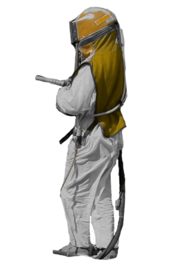

Usługi wykonywane stacjonarnie i mobilnie
Start
Metody
Co czyścimy?
Realizacje
Lokalizacja
Kontakt
PIAS-TECH
piaskowanie | sodowanie | szkiełkowanie
Metody, które wykorzystujemy:
01
PIASKOWANIE
Proces obróbki strumieniowo ściernej który oczyszcza elementy z rdzy, osadów i innych zanieczyszczeń. Z wykorzystaniem ścierniwa o odpowiedniej gradacji, idealnie przygotowuje materiał do malowania lub innego rodzaju konserwacji.
03
SZKIEŁKOWANIE
Metody tej używamy do oczyszczania delikatnych materiałów takich jak aluminium. Głównie wykorzystywane jest do renowacji silników, zbiorników ze stali nierdzewnej itp.
02
SODOWANIE
Metoda ta jest najdelikatniejszą obróbką strumieniową, która nie nagrzewa materiału a pozbywa się lakieru czy też osadów. Idealnie nadaje się do oczyszczania karoserii samochodów, graffiti, drewnianych domów czy też kostki brukowej.
Co możemy oczyścić za pomocą powyższych metod?
check_circle Przyczepy, naczepy
check_circle Samochody
check_circle Maszyny
rolnicze
check_circle Silniki i
skrzynie biegów
check_circle Felgi
stalowe i aluminiowe
check_circle Ogrodzenia, bramy
check_circle Elewacje
budynków
check_circle Powierzchnie drewniane

chevron_left
close
chevron_right
Realizacje:
call 786 808 197
schedule 09:00 - 20:00
mail Pias-tech@wp.pl
piaskowanie Grójec | piaskowanie Tarczyn | sodowanie | szkiełkowanie | piaskowanie felg Grójec | piaskowanie mazowieckie | sodowanie mebli | sodowanie drewna |